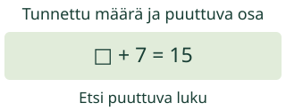
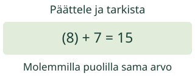
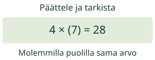

Aava tietää lopputuloksen 15. Mikä luku oli ennen lisäystä 7? Päättele takaisin ja tarkista.
Etsi puuttuva luku yhdestä laskusta.

□ + 7 = 15. Mitä tiedät, mitä etsit?
Mallit ja toisto
Omat luvut: kokonaisluvut 0–9999. Tuntematon 0–9999, myös murtoluku. Kerroin ja jakaja vähintään 1.
Yksi askel näyttää yhden päätelmän tai yksiköiden vaihdon. Toisto etenee vain käynnistettäessä; voit pysäyttää tai askeltaa itse.
Esimerkit ja perustelut
Käänteinen lasku auttaa päättelemään
Ruutu on tuntematon luku. Yhtäsuuruusmerkki kertoo, että puolilla on sama arvo. Yhtälö on ehto, ei käsky laskea vain vasemmalta oikealle.
Esimerkki 1: lisäys kumotaan
□ + 7 = 15: koko määrä 15 koostuu tuntemattomasta osasta ja osasta 7. Puuttuva osa on 15 − 7 = 8. Tarkistus: 8 + 7 = 15.
Esimerkki 2: yhtä suuret osat
4 × □ = 28: neljä yhtä suurta osaa on yhteensä 28. Yksi osa on 28 : 4 = 7. Tarkistus: 4 × 7 = 28. Voit käyttää myös tuntemaasi kertolaskua.
Huomaa tuntemattoman paikka
18 − □ = 11 kysyy poistettua osaa, joten □ = 18 − 11 = 7. Sen sijaan □ − 6 = 9 kysyy alkumäärää: 9 + 6 = 15. Pelkkä miinusmerkki ei määrää ratkaisulaskua.
Väärinkäsitys: 15 + 7 ei kumoa lisäystä 7, vaan jatkaa sitä. Sijoita ehdotuksesi takaisin: toimiiko alkuperäinen yhtälö?


Kokeile ja tarkista
Jos □ + 7 = 15 vaihtuu muotoon □ + 7 = 16, miten tuntematon muuttuu? Päättele ennen mallia.
Ensimmäinen tehtävä: □ + 7 = 15. Mikä luku sopii ruutuun?
JavaScript käynnistää tarkistuksen. Voit myös ratkaista tehtävän paperilla.
Vapaaehtoinen apu
Piirrä koko määrä ja sen tunnettu osa. Tai etsi sopiva luku tutusta yhteen- tai kertolaskusta. Voit vastata suoraan ilman mallin avaamista.
Vähennä lopputuloksesta lisätty 7.
Voit vastata suoraan millä tahansa oikealla menetelmällä. Lukukenttä hyväksyy samanarvoisen kokonaisluvun, desimaalin tai murtoluvun (esim. 8,0 tai 16/2). Enintään 128 merkkiä; ei laskulausekkeita tai eksponenttimuotoa.
Lisäkokeilu
Kokeile mallia 2 × □ = 3. Miksi vastaus 1,5 eli 3/2 toimii? Nollalla kertomista ei voi yleisesti kumota jakamalla: 0 × □ = 0 ei yksilöi lukua, ja 0 × □ = 3 ei toteudu.
Opettajalle, rajat ja paperitehtävä
Tavoite: Yksinkertaisen yhtälön ratkaiseminen päättelemällä. Vuosiluokat 3–6 kanonisen graafin mukaan. Esitieto: ehdotetun ratkaisun testaaminen sekä additiivinen TAI multiplikatiivinen laskuperhe; molempia ei vaadita aloitukseen. Tarjoa tarvittava tuki muille laskuperheille.
Pyydä selitys määristä, älä vain numeroiden siirtämisestä. Älä pakota kirjallista algoritmia, jos päässälasku on tilanteessa selkeämpi. Malli ja esimerkit tukevat päättelyä; suora oikea tulos ei kerro käytettyä menetelmää.
Paikallinen palaute koskee tätä vastausta, ei itsenäisyyttä, pysyvyyttä tai formaalia hallintaa. Ei henkilökohtaista historiaa, tallennusta tai ulkoista laskentapalvelua. Ei väitettä oppimistuloksista. Julkisten oppilasreittien toimivuutta ei varmenneta tässä.
Malli ei mittaa fyysistä liikettä tai ajankäyttöä; toiston 0,9 sekuntia on esitystahti. Suuri teksti ja oma askellus ovat käytettävissä. Täyttä manuaalista saavutettavuutta tai oppilaskokeilua ei ole tehty.
Piilota osa 15 laskumerkistä kuppiin ja jätä 7 näkyviin. Päätelkää piilossa oleva määrä. Näytä lopuksi kaikki ja tarkistakaa. Kertolaskussa käytä yhtä suuria ryhmiä.
Poistumiskysymys: Päättele 20 − □ = 13 ja tarkista. Millä tavoin se eroaa yhtälöstä □ − 13 = 20?